点击关注☞ 双流中学九江实验学校 2022-04-01 11:35 发表于四川
惠风和畅 纸鸢翻飞
THE SPRING EQUINOX
为弘扬传统文化，2022年3月，四川省双流中学万科实验学校一年级组开展了以“春日定格、文化传承、筝筝日上”为主题的风筝节活动。
图片2.png
图片4.png
图片3.png
图片5.png
图片1.png
老师们和孩子们分享了风筝的起源典故及制作方法，一起用手中的画笔，尽情涂鸦，制作出自己心中独一无二的风筝，并利用周末的时间放飞自己绘制的风筝。
各班将同学们精心制作的风筝挂在风雨走廊进行展示，并邀请一年组所有师生投票，选出大家心目中的“最美风筝”。
图片10.png
图片12.png
图片9.png
图片7.png
图片6.png
最美风筝：
一年级1班：曾昊轩、王梓萱、秦懿、王晨硕、辜莘亚、刘灵萱
一年级2班：王昭质、王昭质、牟一赫
一年级3班：杨芷婳、罗锡澍、刘芷昕、廖姝媱、孙瑞欣
一年级4班：刘若艺、林姝妧、蒋兰馨、黄橙子、严国玮
一年级5班：李慕涵、刘宸睿、伏悦、颜稚宸
一年级6班：李艺豪、李佳淼、董茹溪、唐一宁、王馨悦、徐梓廖羽、欧阳熠城、黎孟志、杨熙辰
2022年3月25日下午，一年级全体同学在操场集合，观看了每班五位放风筝“高手”的对决！此次比赛我们邀请了张阳、张倩、张瑜、郑艳、陈小霞五位老师担任评委，杜雪寒副校长作为嘉宾出席了本次活动。
运动场上，孩子们手握风筝，尽情奔跑，感受着放风筝带来的乐趣。只见天空中缤纷多彩的风筝时而骤然腾起，时而滑翔而下，时而缓缓前行，时而在空中盘旋，吸引着孩子们的目光。孩子们随着风筝起落而屏息凝神、欢呼鼓掌，比赛精彩纷呈，场面十分热闹。
图片14.png
图片15.png
图片17.png
满天飞舞的风筝承载着孩子们的希望与梦想在蓝天翱翔。黄继成老师也为全体同学带来了一次精彩的风筝放飞表演。
张瑜老师作为评委代表，肯定了同学们在放飞过程中展现出的竞技精神，同时也鼓励同学们积极进取、好好学习、“筝筝日上”。
经过激烈角逐，以下同学在决赛中脱颖而出。
一年级1班：张明瑞
一年级2班：马铭蕊
一年级3班：夏浩恩、钟荣宸、余林俊
一年级4班：李芯蕊
一年级5班：蔣奕含、李鑫昊、吳亦航、刘思涵、庞茂辰
一年级6班：窦浩轩、王恒山、肖致远、张熙然、郑钰婷
此次风筝节，是双中万科积极落实“双减”政策，高质量推动学生五育并举全面发展的有效尝试。未来，我校还将持续探索更多有益于学生身心健康的多元化活动，提升学生的综合素质。
供稿 | 一年级组
图片 | 一年级组
编辑 | 王钦
审核 | 席向东
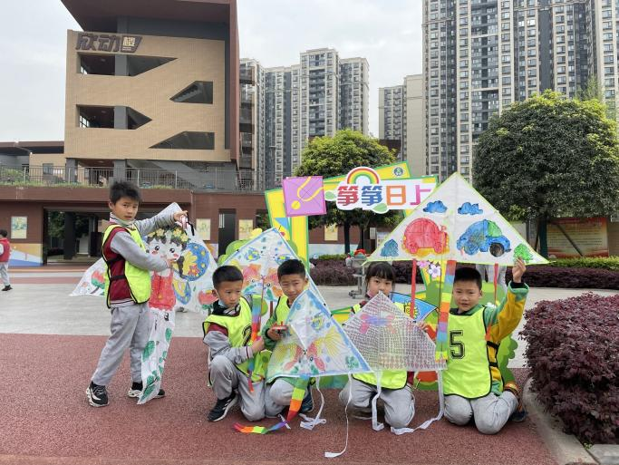
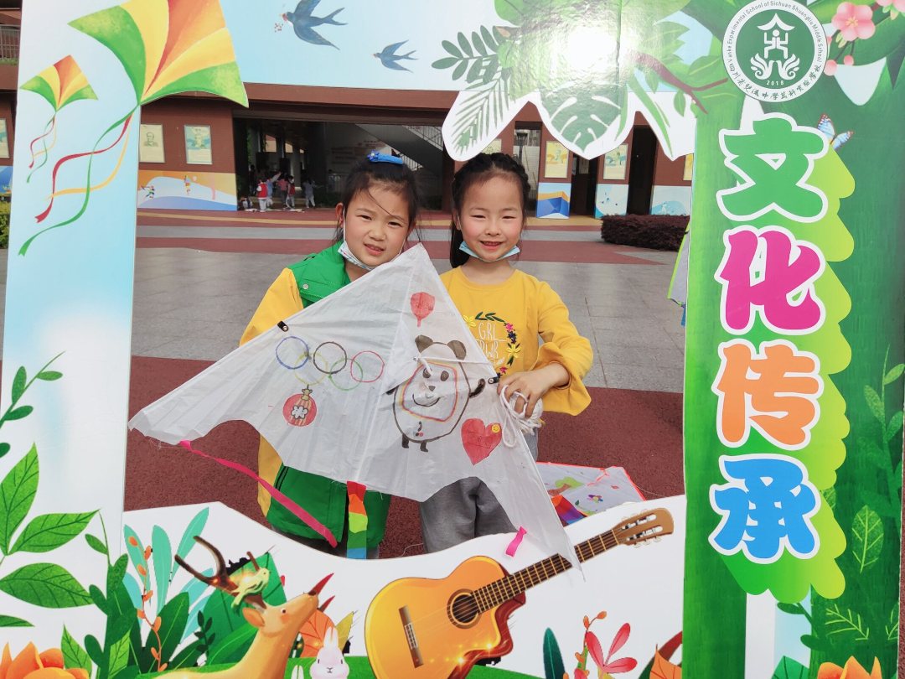
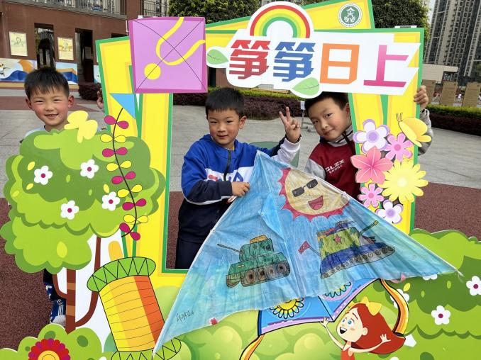
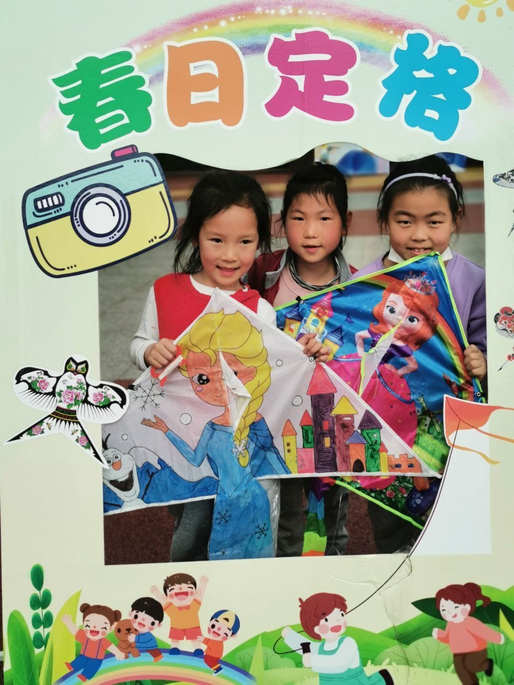
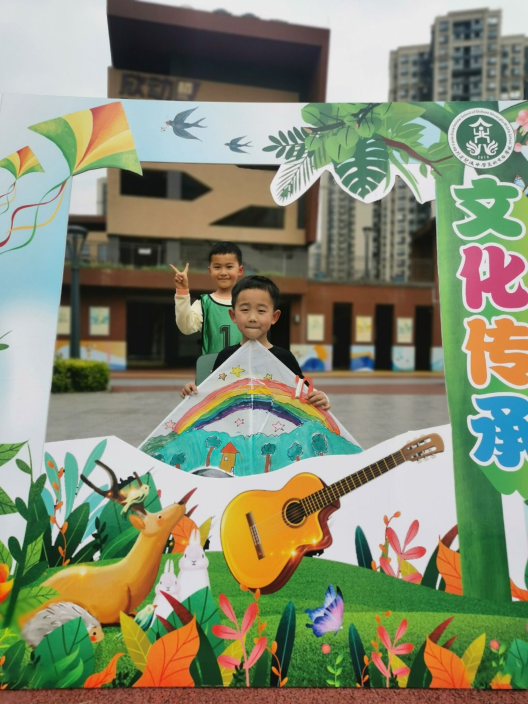
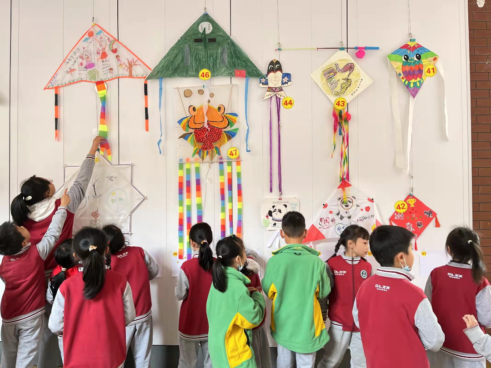
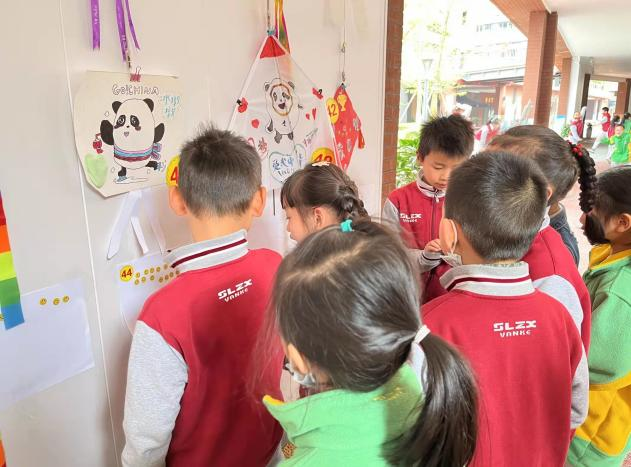
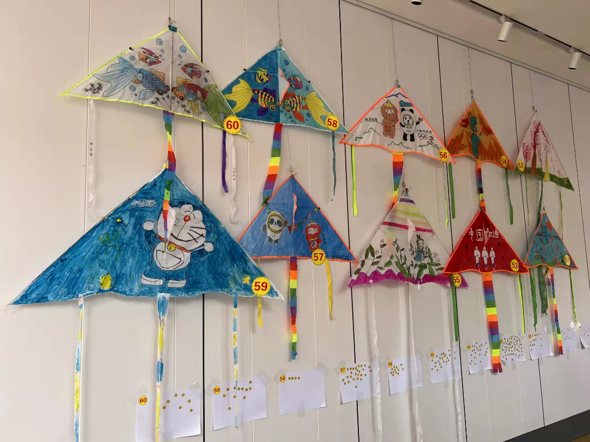
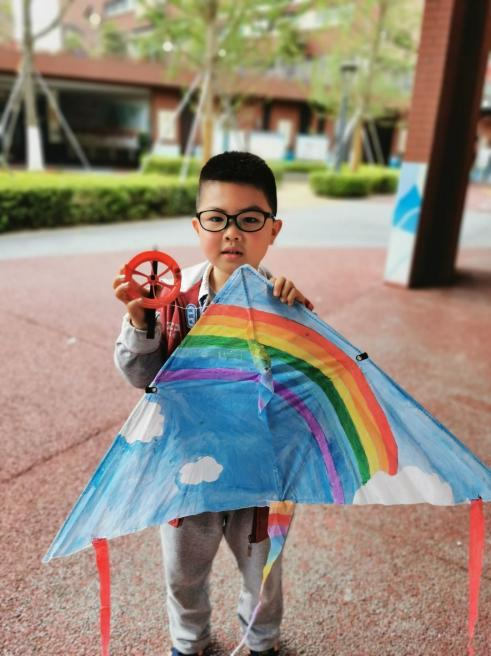
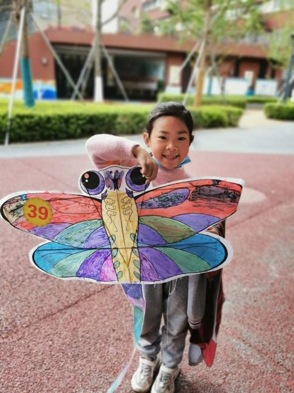


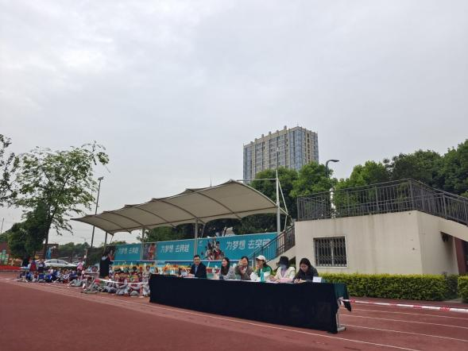
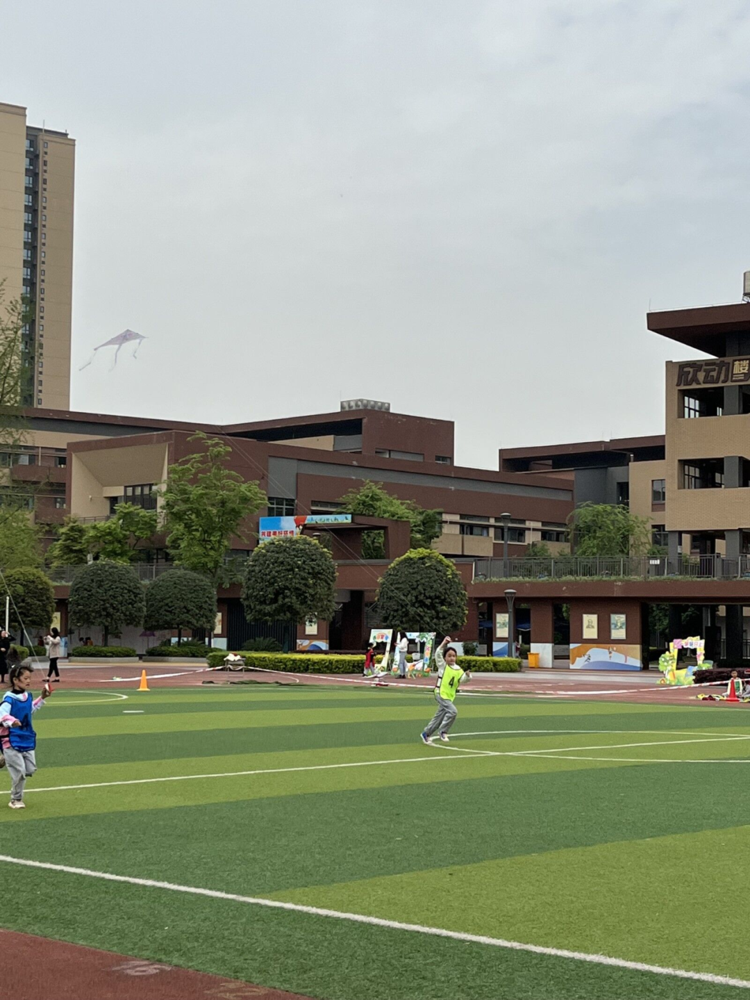
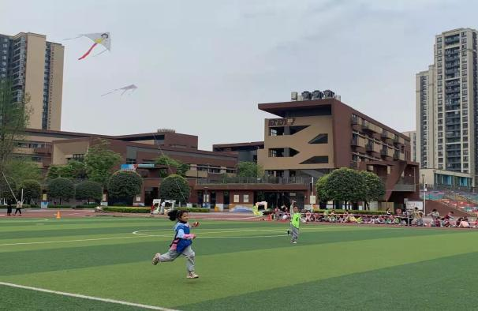
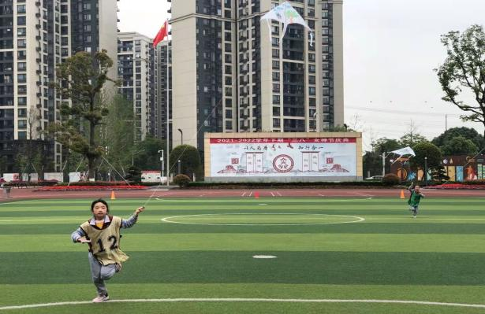
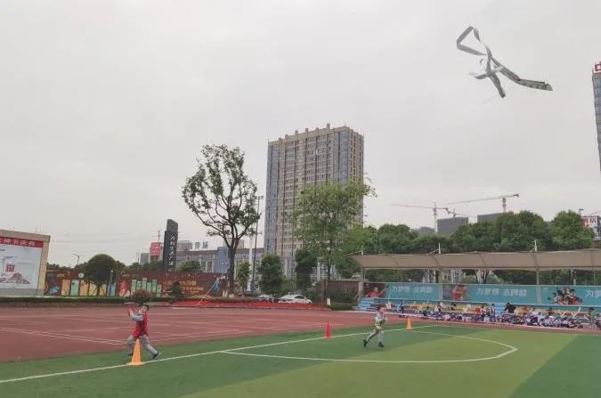
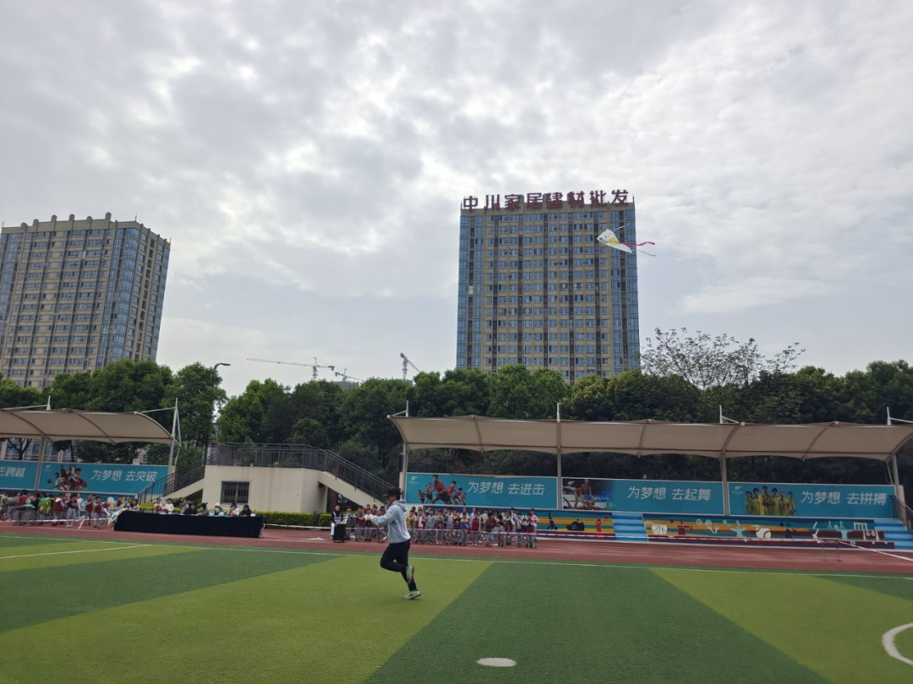
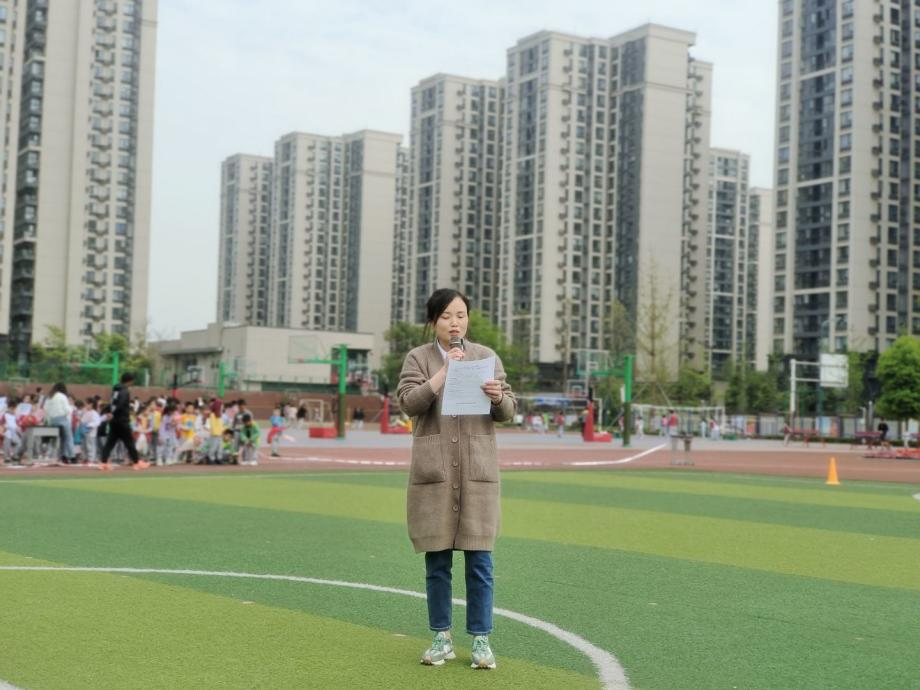
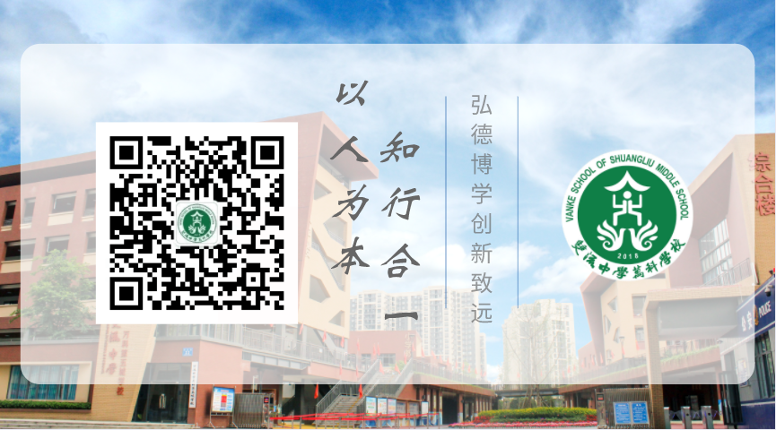